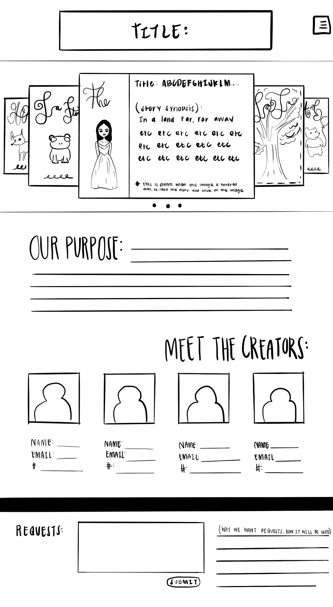
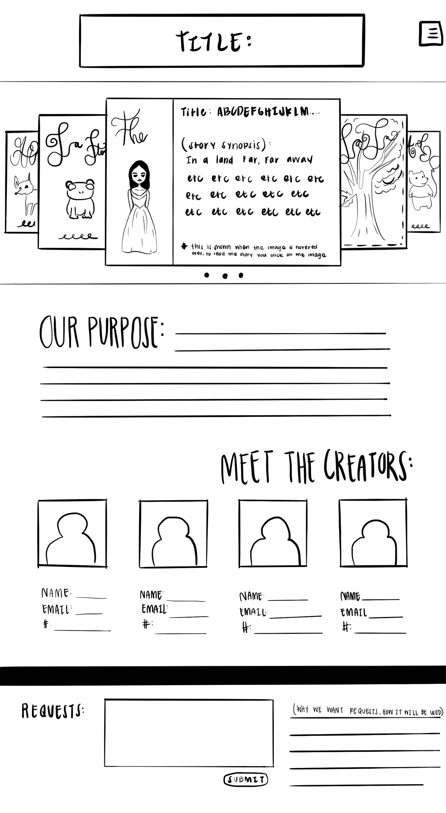
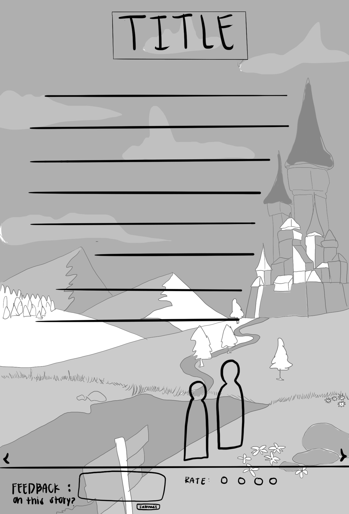
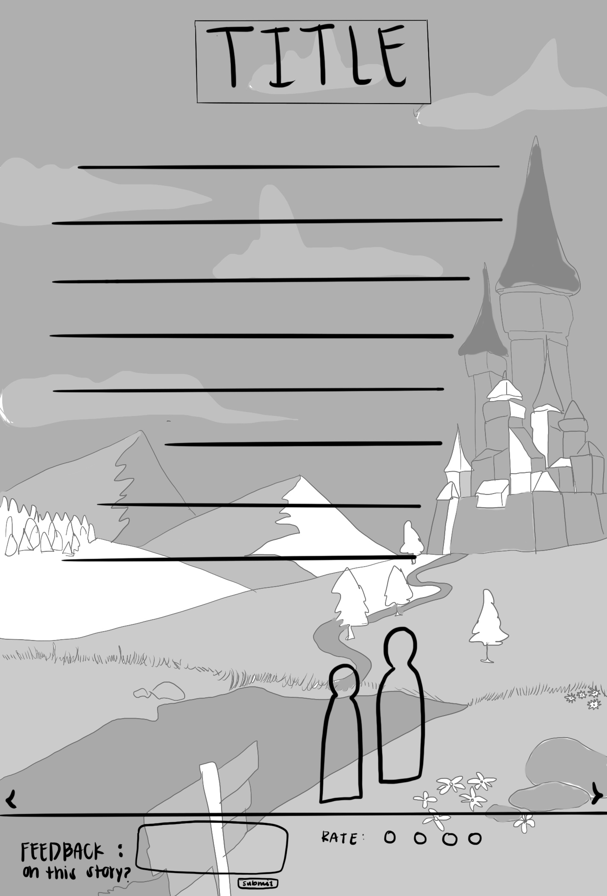
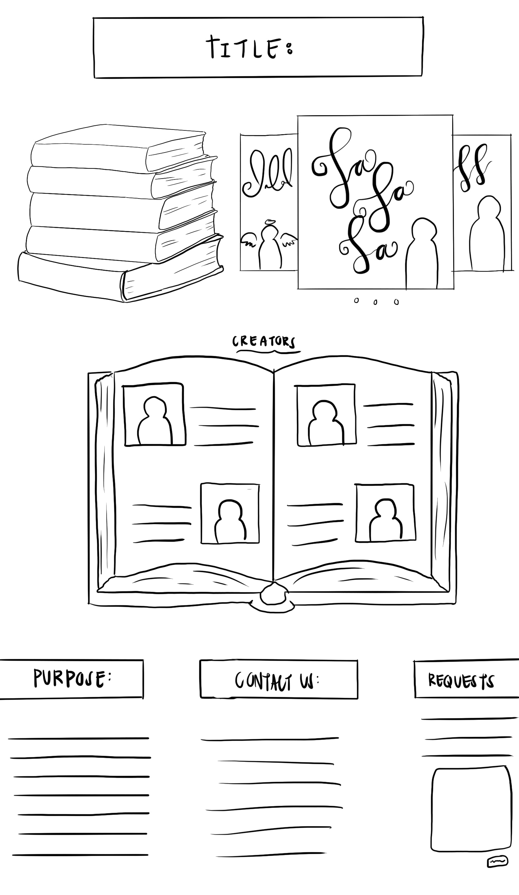
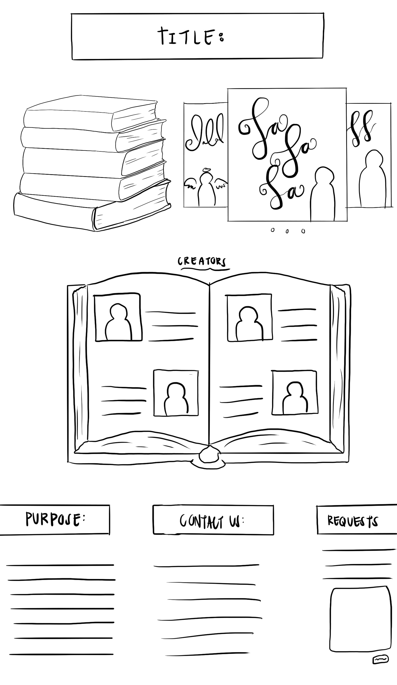

lab twenty-one: second draft project sketches
Purpose:
For this lab, I had to revise my rough sketches after getting advice and feedback from my teammates. This draft of sketches are more detailed and portray my ideas in a more structured way. 
For this lab, I had to revise my rough sketches after getting advice and feedback from my teammates. This draft of sketches are more detailed and portray my ideas in a more structured way. 
Challenges:
I did not have any problems doing this, aside from worrying that the individual pages may seem too similar to one another. However, I never expected myself to have any challenging moments with this lab since it is really only some drawing which I love to do. 
I did not have any problems doing this, aside from worrying that the individual pages may seem too similar to one another. However, I never expected myself to have any challenging moments with this lab since it is really only some drawing which I love to do. 
Results:
I have included my sketch images on this lab, which is basically the only result of this particular one. So those are my results. 
I have included my sketch images on this lab, which is basically the only result of this particular one. So those are my results. 